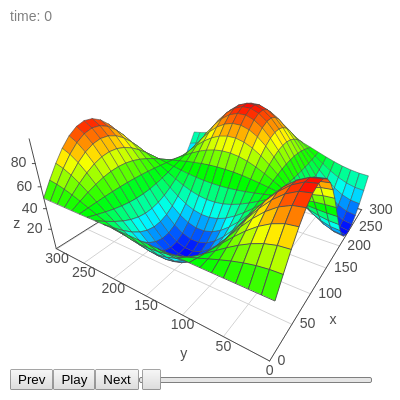
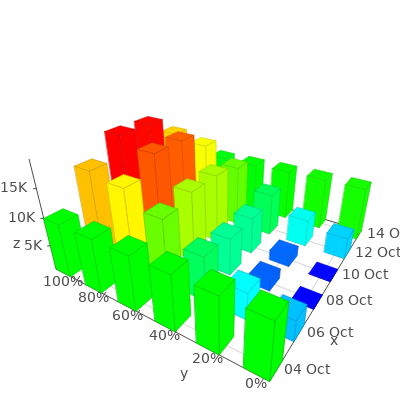
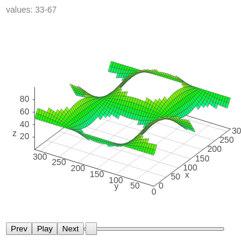
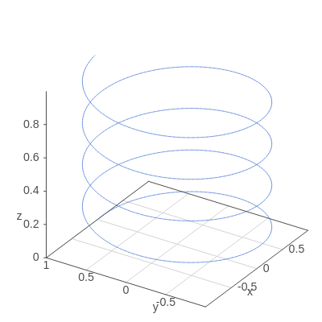
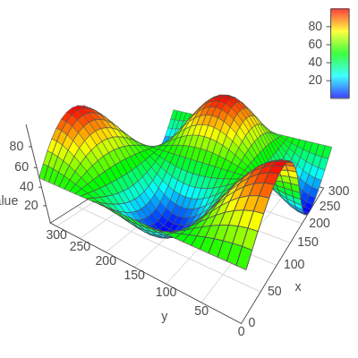
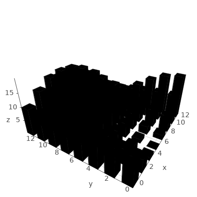
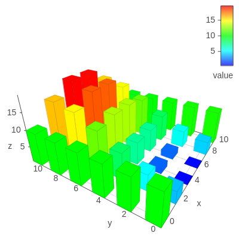
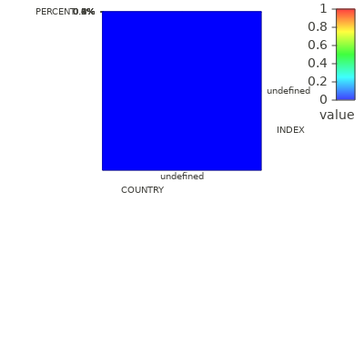

Graph 3D
Animation

Animation Moving Dots
Basics
Camera Position
Cloud with Colored Dots
Cloud with Sized Dots
Custom Labels

Disable Zoom
Filter Data

Line

Mobile
Playground

Styling
Styling per Point

Styling Surface
Tooltips

WORLD INDEXES BY COUNTRY 2018 MID-YEAR

Zoom CTRL Scroll